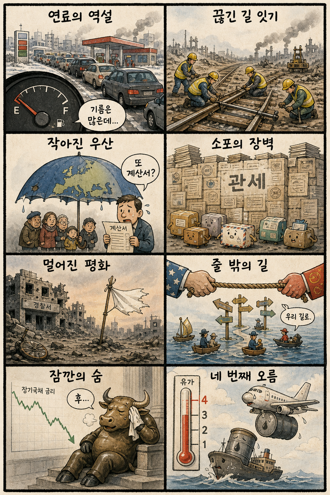
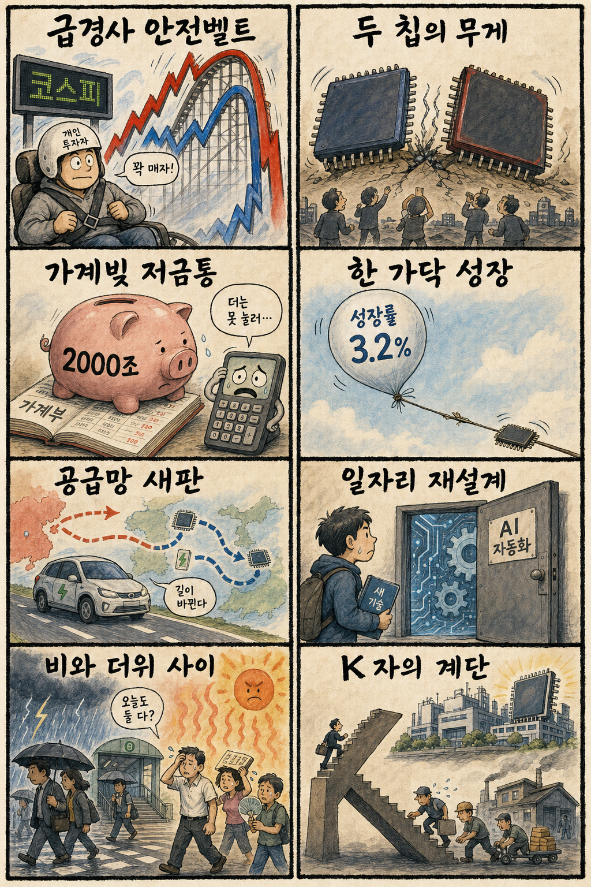

01
크라우드스트라이크 · 213.38→201.63달러 · -5.51%
내용요약 시가 대비 5.51% 하락해 조사 대상 중 낙폭이 가장 컸습니다.
예상여파 고밸류 보안·소프트웨어주의 변동성 확대가 국내 성장주 심리에 부담을 줄 수 있습니다.
MORNING_BRIEFING_20260820
작성 시각: 2026-08-20 06:38 KST · 직전 미국 정규장과 2026-08-20 KST 당일 공개 기사 기준
8월 19일 미국 정규장은 장기국채 금리 급등이 진정되며 3대 지수가 소폭 반등했습니다. 다우 +0.22%, S&P 500 +0.21%, 나스닥 +0.16%였습니다. 다만 AMD·인텔·엔비디아 등 반도체는 시가 대비 약세를 이어가 국내 대형 반도체에 강한 반전 신호를 주지는 못했습니다. 전일 KOSPI가 -5.80% 급락한 뒤인 만큼 오늘은 낙폭과대 추격보다 6,400선 방어와 외국인 현·선물 매도 진정을 먼저 확인해야 합니다.
| 지수 | 종가 | 등락률 | 한국 증시 영향 |
|---|---|---|---|
| 다우존스 | 53,463.05 | +0.22% | 금리 충격 완화 |
| S&P 500 | 7,707.98 | +0.21% | 제한적 위험선호 |
| 나스닥 종합 | 26,331.09 | +0.16% | 반도체 약세로 탄력 제한 |
장기금리 진정으로 +0.16~+0.22% 올랐습니다.
AMD -3.94%, 인텔 -4.51%로 시가 대비 밀렸습니다.
전일 대형 반도체 매도로 6,471.17에 마감했습니다.
급변장과 검증 표본 부족으로 현금 관망을 유지합니다.
8월 19일 보고서는 전일 급락과 미국 반도체 약세 속에서 수급·컨센서스·30건 보정 표본·손익비 문턱을 동시에 검증하지 못해 공식 추천을 내지 않았습니다. 게시 당시 판단은 그대로 유지됩니다.
| 시장 | 종가 | 등락률 | 해석 |
|---|---|---|---|
| KOSPI | 6,471.17 | -5.80% | 19일 종가·시가 대비 -0.88% |
| KOSDAQ | 824.46 | -1.17% | 시가 대비 +1.78% |
| 다우존스 | 53,463.05 | +0.22% | 금리 진정 |
| S&P 500 | 7,707.98 | +0.21% | 제한 반등 |
| 나스닥 | 26,331.09 | +0.16% | 반도체 약세 |
테슬라는 시가 대비 +3.60%로 상대 강세였습니다.
애플 +2.16%, 아마존 +1.91%로 반등했습니다.
AMD -3.94%, 인텔 -4.51%, 엔비디아 -1.85%였습니다.
크라우드스트라이크는 시가 대비 -5.51% 밀렸습니다.
내용요약 시가 대비 5.51% 하락해 조사 대상 중 낙폭이 가장 컸습니다.
예상여파 고밸류 보안·소프트웨어주의 변동성 확대가 국내 성장주 심리에 부담을 줄 수 있습니다.
내용요약 반도체 업종 매도가 이어지며 시가 대비 4.51% 하락했습니다.
예상여파 국내 반도체도 지수 반등과 별개로 외국인 수급과 시초가 갭을 확인해야 합니다.
내용요약 AI칩 경쟁과 업종 차익실현 속에서 시가 대비 3.94% 밀렸습니다.
예상여파 국내 AI 반도체 연결주를 단순 수혜 기대만으로 추격하는 전략은 위험할 수 있습니다.
내용요약 미국 지수의 제한적 반등 속에서 시가 대비 3.60% 올라 상대 강세를 보였습니다.
예상여파 전기차 투자심리에 완충 요인이지만 국내 2차전지 전반으로 확대 해석하기 전 수급 확인이 필요합니다.
내용요약 초대형 기술주 선호가 유입되며 시가 대비 2.16% 상승했습니다.
예상여파 현금흐름이 안정적인 대형 기술주 선호가 이어질 수 있으나 반도체 약세와 분리해 봐야 합니다.
미국 3대 지수의 소폭 반등은 전일 급락한 국내 증시에 심리적 완충을 줄 수 있습니다. 그러나 AMD·인텔·엔비디아 등 반도체의 약세가 이어져 KOSPI 대형주의 강한 갭 반등을 단정하기 어렵습니다. KOSPI 6,400선과 전일 저점 방어, 외국인 현·선물 매도 축소가 함께 확인돼야 반등의 질을 인정할 수 있습니다. 유가의 나흘째 상승은 항공·화학·운송 원가에 부담이므로 낙폭과대 종목의 시초가 추격을 피합니다.
오늘은 추천 없음 — 현금 관망
전일 KOSPI -5.80% 급락과 미국 반도체 약세 속에서 전일까지의 외국인·기관 수급, 컨센서스 변화, 30건 이상 유사 조건 확률 보정, 예상 손익비 1.5 이상을 동시에 검증해 종합점수 75점·상승확률 60% 문턱을 넘긴 후보가 없습니다. 숫자를 임의로 채우지 않습니다.
관심 연결종목 메모리·파운드리, 데이터센터 전력, 전기차는 관찰 대상일 뿐 매수 추천이 아닙니다. 장전 급등 또는 과도한 시초가 갭에서는 추격매수 금지입니다.
전일 저점과 외국인 현·선물 수급을 함께 봅니다.
지수 반등에도 이어진 업종 약세가 멈추는지 확인합니다.
항공·화학 원가와 정유 마진 반응을 구분합니다.
침수·온열질환·전력 피크를 동시에 대비합니다.
핵심 요약: AI 경쟁은 엔비디아의 데이터센터 자금·인프라 중개, 구글과 마벨의 맞춤형 칩 협력으로 영역을 넓히고 있습니다. 국내에서는 HBM·첨단 패키징이 연산 병목의 해법으로 부각되고, 벤처투자 회복과 파운드리 가동률 개선이 생태계 확장의 신호인지 확인해야 합니다.
내용요약 엔비디아가 북유럽 AI 데이터센터 투자와 인프라 구축을 잇는 중개자 역할을 확대한다는 보도입니다.
예상여파 AI 컴퓨팅 경쟁이 칩 판매를 넘어 자금·전력·데이터센터 생태계 선점으로 넓어져 공급망 종속과 투자 효율 논쟁이 커질 수 있습니다.
내용요약 마벨과 구글의 121억달러 규모 AI칩 협력이 부각되며 관련 종목의 주가가 엇갈렸다는 미국 증시 기사입니다.
예상여파 맞춤형 AI칩 경쟁이 강화되면 범용 GPU와 ASIC, 네트워크 반도체 사이의 매출 기대와 밸류에이션 차별화가 심해질 수 있습니다.
내용요약 AI칩 성능 병목의 해법으로 고대역폭 메모리와 첨단 패키징의 중요성이 커지고 있다는 보도입니다.
예상여파 삼성전자와 SK하이닉스에는 구조적 수요 기회지만 급격한 주가 변동 속 수율·고객 인증·공급 확대 속도를 함께 봐야 합니다.
내용요약 상반기 국내 벤처투자가 8조8천억원으로 역대 최대를 기록했고 ICT 서비스와 AI 반도체에 자금이 몰렸다는 기사입니다.
예상여파 모험자본 회복은 초기기업의 연구개발과 채용을 돕지만 특정 AI 분야 쏠림과 후속 투자 지속성은 점검할 필요가 있습니다.
내용요약 HBM 수요가 첨단 공정 가동률을 끌어올리며 삼성 파운드리의 생산 회복 신호가 나타났다는 보도입니다.
예상여파 파운드리 회복이 현실화하면 장비·소재까지 온기가 번질 수 있으나 수주, 수율과 실제 매출 전환을 확인해야 합니다.
핵심 요약: 러시아·우크라이나 물류와 연료 차질, 가자지구 공습이 안보 불안을 높이는 가운데 유럽은 약해진 미국 안보우산의 비용을 고민하고 있습니다. 소액소포 통상 장벽과 나흘째 오른 유가는 한국 수출기업과 생활물가에 직접 연결되는 변수입니다.
내용요약 러시아가 연쇄 타격으로 손상된 물류망 복구를 지시했다는 우크라이나 전쟁 관련 보도입니다.
예상여파 철도·연료·항만 차질이 이어지면 전선 보급과 곡물·에너지 운송 비용이 높아져 유럽의 안보 부담이 커질 수 있습니다.
내용요약 라가르드 유럽중앙은행 총재가 미국의 안보 지원 약화가 유럽의 기존 번영 공식을 흔든다고 진단했다는 기사입니다.
예상여파 유럽의 국방·에너지 자립 투자가 늘면 재정지출과 산업정책의 우선순위가 바뀌고 역내 금리 부담이 길어질 수 있습니다.
내용요약 미국 통상 장벽이 소액 국제소포까지 확대되며 K-뷰티 역직구 비용이 높아질 수 있다는 보도입니다.
예상여파 면세·통관 비용 변화는 중소 수출기업의 가격 경쟁력과 배송 전략에 직접 영향을 줘 현지 물류 전환을 재촉할 수 있습니다.
내용요약 이스라엘군이 가자지구 경찰서를 공습해 사망자가 발생했다는 국제 보도입니다.
예상여파 민간 피해와 보복 위험이 커지면 휴전 협상은 더 어려워지고 중동의 인도주의·에너지 위험 프리미엄이 지속될 수 있습니다.
내용요약 미국 장기국채 금리가 진정되며 뉴욕증시는 반등했지만 중동 불안으로 국제유가는 나흘째 상승했다는 기사입니다.
예상여파 금리 부담 완화는 성장주에 긍정적이지만 유가 상승은 물가와 운송·화학 원가를 자극해 반등 폭을 제한할 수 있습니다.

핵심 요약: KOSPI가 대형 반도체 매도로 5.80% 급락한 가운데 환율 안정만으로는 수급 충격을 막지 못했습니다. KDI의 성장률 상향은 반도체 호황을 반영하지만 가계빚 2천조원, AI 노출 업종의 청년 고용 감소, 폭염과 소나기는 내수와 생활경제의 부담을 보여줍니다.
내용요약 원·달러 환율이 1,400원 아래로 내려갔지만 대형 반도체 매도 여파로 KOSPI가 급락했다는 보도입니다.
예상여파 환율 안정만으로 지수 하락을 막지 못한 만큼 오늘은 외국인 현·선물 수급과 반도체 매도 진정 여부가 핵심입니다.
내용요약 영끌과 빚투가 이어지는 가운데 가계부채가 2천조원 시대에 진입한 점을 지적한 기사입니다.
예상여파 고금리 장기화 시 이자 부담과 소비 여력이 함께 악화될 수 있어 대출 건전성과 취약차주 관리 중요성이 커집니다.
내용요약 KDI가 올해 성장률 전망을 2.5%에서 3.2%로 높였고 상향분 상당 부분을 반도체 효과로 분석했다는 보도입니다.
예상여파 성장률 개선은 긍정적이지만 반도체 편중이 심할수록 업황 반전 때 경기 변동성이 커져 내수·산업 다변화가 필요합니다.
내용요약 AI 노출도가 높은 업종에서 청년층 취업 감소가 두드러져 맞춤형 고용 대책이 필요하다는 기사입니다.
예상여파 초급 직무가 자동화될수록 기업의 신입 육성 구조와 교육과정, 전환 훈련을 함께 재설계해야 고용 공백을 줄일 수 있습니다.
내용요약 전국 대부분 지역에 소나기가 내리고 낮 최고 34도의 무더위가 이어진다는 당일 기상 보도입니다.
예상여파 짧고 강한 비와 폭염이 겹쳐 침수·교통 지연·온열질환·전력 피크를 동시에 대비해야 합니다.
